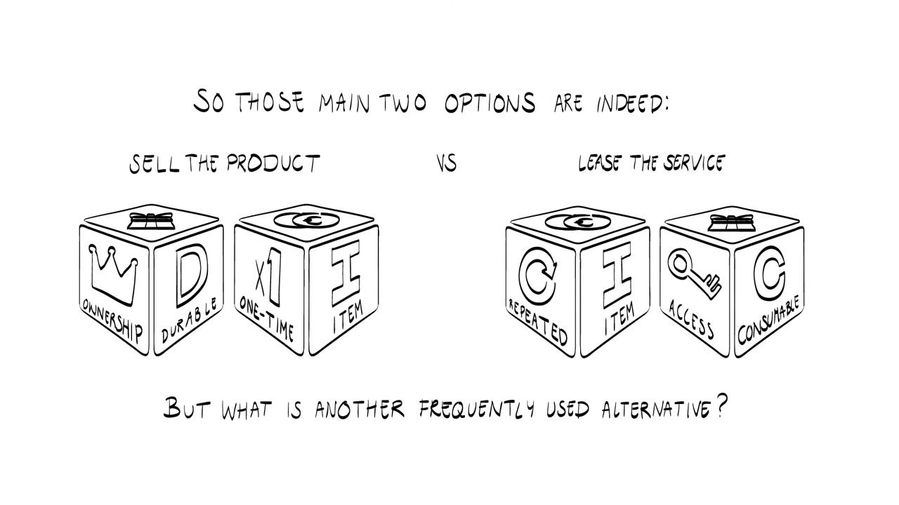

Entrepreneurship for Engineers · TTE01x
Video notes
The fifteen videos of the 4TU course, written out so you can read them. Each page follows its video from start to finish, with the drawings and slides placed where they appear.
- Lectures
- Eight animated lectures, one topic each
- Interviews
- Seven videos in which founders of Dutch university startups talk about the same topics
- Weeks
- The week numbers are the online course's own, not the weeks of CSE 483
Week 1 · The entrepreneur and the opportunity
-
 01
01Tech heroes
Four myths about technology entrepreneurs, four starting points, and the luggage you bring to the journey.
-
 02
02How entrepreneurs started
Three founders say where their idea came from: a PhD, a train stuck in the snow, and a change in the food industry.
-
 03
03Entrepreneurial opportunities
What turns an idea into an opportunity, with the value proposition canvas and the empathy map.
-
 04
04Getting the idea
Four startups pivot, test what everybody believed, and let customer feedback change the product.
Week 2 · From guesses to facts


Week 3 · The minimum viable product


Week 4 · The business model
-
 09
09The business model
Five ways to arrange value exchanges with the outside world, and four add-ons that refine what is transferred and how it is paid for.
-

10Business models in practice
Four startups explain how they get paid. All use the make-sell structure, each with a different set of add-ons.
Week 5 · Funding


Week 6 · The ecosystem
-
 13
13Leveraging the innovation in your ecosystem
Why a product customers welcome can still fail, shown with Sony's e-reader, Amazon's Kindle and a bus fuel from Eindhoven.
-
 14
14Ecosystems in practice
Six startups describe how they studied the ecosystem around them and picked partners, platforms and investors.